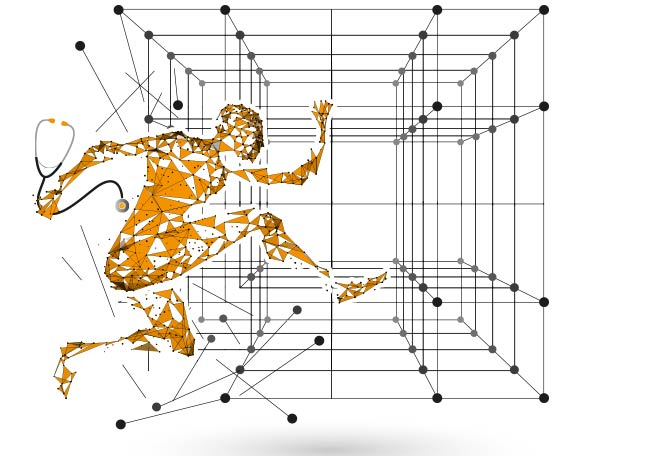

Tu salud es un sistema vivo. Mereces ser comprendido/a como tal. UNIMED aplica las 8 dimensiones del Sujeto Holónico para que vuelvas a tomar las riendas de tu vida.
La ciencia
en tu salud.

No solo cantidad de años sino también con calidad. Aborda tu salud teniendo en cuenta todas las dimensiones de tu persona.
La mayoría de personas salen de la consulta con un diagnóstico y sin entender qué significa. En UNIMED te explicamos qué pasa en tu cuerpo, por qué, y qué opciones tienes. Porque la decisión es tuya.
Te facilitamos aprendizaje para que ganes en salud y en calidad de vida. Empodérate, cambia tu forma de pensar y pasa de ser paciente a ser una persona que participa activamente en la toma de decisiones sobre tu propia salud.
El 80% de las enfermedades crónicas son prevenibles si se actúa antes. La medicina de precisión nos permite ver los riesgos antes de que se conviertan en diagnóstico. Ese es el trabajo de UNIMED.
La Holomedicina es dar atención, terapéutica y tratamiento adecuado, en el momento adecuada y a la persona adecuada. Un espacio entre tu salud y tus decisiones: conocimiento, certeza, confianza y acción.
La salud no es un dato.
Es un sistema vivo.
Y mereces ser comprendido/a como tal.
La Holomedicina concibe al ser humano como un holón — un todo que es simultáneamente parte de sistemas más amplios. Ninguna dimensión puede ignorarse sin empobrecer la comprensión de la persona completa.
Esta arquitectura de 8 dimensiones es la base científica de toda consultoría en UNIMED: desde la nutrigenómica hasta la salud mental, desde la farmacogenómica hasta los factores culturales y espirituales.
Cada servicio se diseña desde las 8 dimensiones del Sujeto Holónico. No hay protocolos genéricos.
Abordaje 8-dimensional mediante el framework HoloMed. Diagnóstico integral, plan de acción personalizado y seguimiento continuo desde todas las dimensiones de tu persona.
Solicitar consulta →Farmacogenómica, genética clínica y medicina preventiva de precisión. La vanguardia del diagnóstico y tratamiento individualizados.
Ver servicio →Tu código genético como guía de alimentación. Análisis de variantes y protocolos nutricionales basados en tu biología única.
Ver servicio →Intervención en deterioro cognitivo, salud cerebral y neurociencias cognitivas aplicadas al bienestar mental y la calidad de vida.
Explorar →Acompañamiento especializado en el abordaje de enfermedades crónicas desde un enfoque integral y multidimensional.
Ver servicio →CAPS Digital es el agente epistémico de UNIMED. No es un chatbot — razona con ontologías clínicas reales (LOINC, SNOMED CT) y te acompaña desde las 8 dimensiones del Sujeto Holónico. Disponible 24h, gratis para empezar.
Iniciar conversación — gratisCAPS Digital orienta e informa. No diagnostica ni prescribe. Conecta con el equipo clínico de UNIMED cuando es necesario.
La Medicina Unificada es posible solo desde un cambio de paradigma científico que permita comprender la salud humana como sistema dinámico y complejo.
Samuel Carmona Aguirre — autor del método MH-AIAP y creador del marco HoloMed — ofrece formación y mentoría directa para equipos clínicos e instituciones.
Contactar con Samuel →Herramientas, guías y recursos para que tomes las riendas de tu salud hoy.
El paradigma científico original que define al ser humano como sistema complejo adaptativo multidimensional. Casi 20 años de investigación.
El fundamento científico de la HoloMedicina. Reconocido por la UNESCO en París 2016.
Por qué el mismo fármaco funciona para unos y genera reacciones adversas en otros.
Habla ahora con CAPS Digital — gratis, sin registro — o pide cita directamente con el equipo UNIMED.